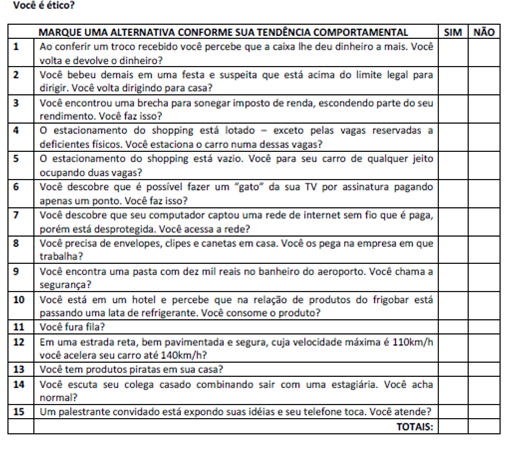

CAPÍTULO 4: AS VIRTUDES E INDÚSTRIA TÊXTIL E VESTUÁRIO
Contextualizando
Hierarquia de valores
Abaixo estão relacionados valores dispostos em ordem aleatória. Sua tarefa é indicar a importância que eles têm para você como princípios orientadores da vida profissional, por exemplo no setor da indústria têxtil e do vestuário.
Estude a lista cuidadosamente, e destaque o valor que lhe parece o mais importante de todos. Escreva “1” à esquerda do mesmo. A seguir, destaque o valor que é o segundo em importância para você e escreva “2” à esquerda. Faça o mesmo para cada um dos valores restantes. Depois, escreva a sua hierarquia de valores, de 1 a 23. O resultado final deve mostrar como você pensa realmente.
___ COLEGUISMO
___ RESPONSABILIDADE
___ AUTO- RESPEITO
___ MERITOCRACIA
___ INTEGRIDADE
___ DINHEIRO
___ HUMILDADE
___ COMPROMETIMENTO
___ SINCERIDADE
___ FIDELIDADE
___ HONESTIDADE
___ REALIZAÇÃO PESSOAL
___ CRIATIVIDADE
___ APRENDIZADO CONTÍNUO
___ HIERARQUIA
___ PRAZER
___ RECONHECIMENTO SOCIAL
___ EMPREENDEDORISMO
___ RESPEITO À NATUREZA
___ RESILIENCIA
___ RESPONSABILIDADE SOCIAL
___ SOLIDARIEDADE
___ VIDA EXCITANTE
Resiliência é a capacidade de o indivíduo lidar com problemas, adaptar-se a mudanças, superar obstáculos ou resistir à pressão de situações adversas – como perdas, traumas ou estresse.
(Re)construindo conhecimentos
Valores éticos
Os valores orientam a nossa vida e influenciam as nossas decisões, determinando o que pensamos acerca do que é melhor ou pior. Muitas vezes ouvimos as pessoas fazer afirmações acerca dos valores que aceitam. Podem dizer, por exemplo, que a honestidade, o respeito e a amizade são os valores que prezam acima de tudo. O que querem dizer é que essas são ideias que norteiam a sua vida, levando-as a realizar determinadas ações e a preferir determinadas coisas.
(...) Temos valores dos mais diversos gêneros e não é fácil classificá-los, mas muitos dos mais importantes estão associados a três domínios: a ética, que diz respeito ao modo como devemos agir e relacionar-nos com os outros, a estética, isto é, o domínio do belo e da arte, e a religião, na qual o homem procura desenvolver a sua vida espiritual através do contato com entidades sagradas. Como exemplos de valores éticos podemos indicar a generosidade, a liberdade e a justiça. Entre os valores estéticos destacam-se a beleza, a harmonia, a unidade, a elegância, a originalidade e o prazer desinteressado. No domínio da religião, a fé e o sagrado contam-se entre os valores mais importantes.”
ALMEIDA, Aires; TEIXEIRA, Célia; e outros. .A Arte de Pensar, 10º ano, Lisboa: Didáctica Editora, 2007.
“Dou valor as coisas, não por aquilo que valem, mas por aquilo que significam”. Gabriel Garcia Marques
Valores das empresas
Você já deve ter lido ou escutado que as empresas, quando realizam seu planejamento estratégico, costumam definir um conjunto de princípios de atuação que buscam expressar sua estratégia e diferenciá-las da concorrência. Esses princípios vêm expressos na declaração de missão, visão e valores da empresa.
Os valores, neste caso, são as convicções que fundamentam as escolhas por um modo de conduta tanto de uma organização. Os valores organizacionais podem ser definidos como princípios que guiam a vida da organização, tendo um papel tanto de atender seus objetivos quanto de atender às necessidades de todos aqueles a sua volta.
Exemplos de valores organizacionais:
Valores da Fiat
1)Satisfação do cliente. Ele é a razão da existência de qualquer negócio.
2) Valorização e respeito às pessoas. São as pessoas o grande diferencial que torna tudo possível.
3)Atuar como parte integrante do Grupo Fiat. Juntos nossa marca fica muito mais forte.
4) Responsabilidade social. É a única forma de crescer em uma sociedade mais justa.
5) Respeito ao Meio Ambiente. É isso que nos dá a perspectiva do amanhã.
Valores do HSBC - Banco
Nossa conduta deve refletir os mais altos padrões de ética;
Nossa comunicação deve ser clara e precisa;
Nosso gerenciamento deve ser em equipe, consistente e focado;
Nosso relacionamento com clientes e colaboradores deve ser transparente e baseado na responsabilidade e confiança entre as partes.
Gerdau
Ter a preferência do CLIENTE
SEGURANÇA das pessoas acima de tudo
PESSOAS respeitadas, comprometidas e realizadas
EXCELÊNCIA com SIMPLICIDADE
Foco em RESULTADOS
INTEGRIDADE com todos os públicos
SUSTENTABILIDADE econômica, social e ambiental
Teorias éticas: que tipo de pessoa devo ser?
As duas teorias éticas que vimos nas aulas passadas (baseada nas consequências e baseada no dever) fazem a mesma pergunta: o que devo fazer? Elas querem saber se uma ação é correta ou não. Uma diz que devo me basear nas consequências e a outra que devo me basear no dever.
Mas há uma terceira teoria ética que faz outra pergunta: que tipo de pessoa devo ser? Para esta teoria, a ética diz respeito ao nosso caráter.
Éticas baseadas nas virtudes
“Uma pessoa virtuosa é alguém que tem traços de caráter moralmente bons. Podemos afirmar que uma ação é certa se for uma ação que uma pessoa virtuosa praticaria. Uma ação certa expressará, então, traços de caráter moralmente bons e é isso que a torna certa. Por exemplo, dizer a verdade expressa sinceridade.”
Fonte: Law, Stephen. Guia Ilustrado Zahar “Filosofia”. Rio de Janeiro: Jorge Zahar Editores, 2008.
• A pergunta crucial da ética das virtudes é “como eu devo viver?”
E a resposta é: cultive suas virtudes. Somente cultivando as virtudes se obtém o real desenvolvimento humano.
Aristóteles, filósofo grego, que viveu no século IV antes da nossa era, foi o maior representante da ética das virtudes. Ele sustentava que as virtudes são qualidades que nos ajudam a “viver bem”.
“Viver bem”, para Aristóteles, significava alcançar o crescimento pessoal. O que torna alguém uma boa pessoa? Basicamente, ser uma boa pessoa é viver de forma correta e pelas razões corretas.
Os antigos gregos enfatizavam quatro virtudes cardinais:
• Sabedoria: compreender racionalmente como devemos viver.
• Coragem: encarar o perigo e o medo com confiança apropriada.
• Temperança: fazer a razão controlar nossas emoções.
• Justiça: tratar os outros de forma justa
O que é a virtude?
Aristóteles afirmou que a virtude é um traço de caráter manifestado no agir habitual. O “habitual” é importante. A virtude da honestidade, por exemplo, não é possuída por alguém que diz a verdade apenas ocasionalmente ou quando isso lhe é vantajoso. A pessoa honesta é naturalmente veraz; as suas ações “brotam de um caráter firme e inabalável”. Isto é um começo, mas não basta. Não distingue as virtudes dos vícios, pois os vícios são também traços de caráter manifestados nas ações habituais.
Edmund L Pincoffs (filósofo que lecionou na Universidade do Texas), fez uma sugestão que resolve este problema. Ele sugeriu que as virtudes e os vícios são qualidades a que nos referimos para decidir se alguém merece ser procurado ou evitado. “Nós preferimos alguns tipos de pessoas, outros evitamo-los”, afirma. “As particularidades na nossa lista [de virtudes e vícios] podem servir como razões para preferir ou evitar pessoas”.
Procuramos pessoas por razões diferentes, e isto tem implicação nas virtudes relevantes.
[1] Quando procuramos um mecânico de automóveis, queremos alguém habilidoso, honesto e consciencioso;
[2] Ao procurar um professor, queremos alguém com conhecimentos, fluente e paciente.
Assim, as virtudes associadas à reparação de automóveis são diferentes das virtudes associadas ao ensino. Mas também avaliamos as pessoas enquanto pessoas, de uma forma mais geral, pelo que temos não apenas o conceito de um bom mecânico ou de um bom professor, mas de uma boa pessoa.
As virtudes morais são as virtudes das pessoas enquanto pessoas. Aproveitando a deixa de Pincoffs, podemos, pois, definir uma virtude como um traço de caráter, manifestado nas ações habituais, que é bom uma pessoa possuir. E as virtudes morais são as virtudes, que é bom todas as pessoas possuírem.
Texto adaptado de James Rachels. Elementos de Filosofia Moral. p. 245 – 268.
Gradiva, 2004,
Quem é?
Aristóteles foi um filósofo grego, aluno de Platão e professor de Alexandre, o Grande. Seus escritos abrangem diversos assuntos, como a física, a metafísica, a poética, a lógica, a retórica, o governo, a ética, a biologia e a zoologia. Juntamente com Platão e Sócrates, Aristóteles é um dos fundadores da filosofia ocidental.
A respeito de Aristóteles, assista:
Para saber mais, assista
Ação e reflexão
Pesquisa dos Valores do Jovem
Responda à seguinte pesquisa:
1. Qual dos cinco itens abaixo você acha mais importante para a sociedade?
( ) Moral ( ) Política ( ) Religião ( ) Ciência ( ) Arte
2. Qual das quatro virtudes abaixo você acha mais importante para a sociedade?
( ) Tolerância ( ) Justiça ( ) Competência profissional ( ) Responsabilidade
3. Qual das cinco virtudes abaixo você acha mais importante para o convívio pessoal?
( ) Generosidade ( ) Coragem ( ) Lealdade ( ) Honestidade ( ) Humildade
4. Escolha a alternativa com a qual você concorda mais:
( ) a pior coisa da vida é ser otário ( ) a pior coisa da vida é ser injustiçado
( ) a pior coisa da vida é ser desprezado ( ) a pior coisa da vida é ser sozinho
5. Assinale a alternativa que corresponde ao mais importante para a sua vida:
( ) ser amado ( ) ser tratado de forma justa ( ) achar que a vida vale a pena ser vivida
6. Qual o grau de influência de seus familiares ou responsáveis sobre os valores que você tem hoje?
( ) Muita influência ( ) Média influência
( ) Pouca influência ( ) Nenhuma influência
7. Qual o grau de influência de seus amigos sobre os valores que você tem hoje?
( ) Muita influência ( ) Média influência
( ) Pouca influência ( ) Nenhuma influência
O que aprendi
Neste capítulo você aprendeu
1. O que são os valores: eles orientam as nossas vidas e determinam as nossas escolhas e preferências;
2. Que as empresas ou organizações possuem valores organizacionais – eles pautam o comportamento da empresa.
3. Há uma terceira maneira de pensar a ética que faz a seguinte pergunta: que tipo de pessoa devo ser? Para esta teoria, a ética diz respeito ao nosso caráter. Para as chamadas éticas das virtudes, uma pessoa virtuosa é alguém que tem traços de caráter moralmente bons.